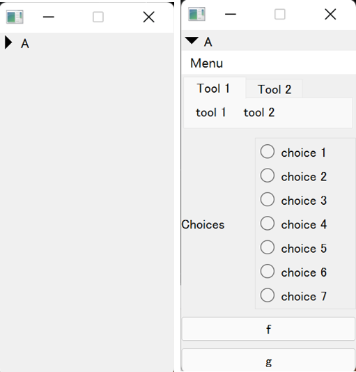
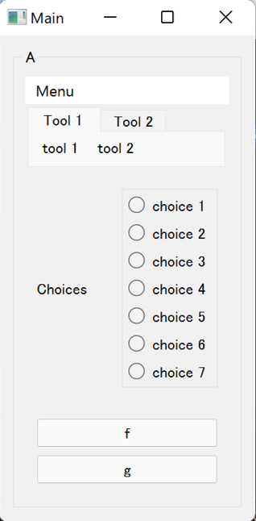

Container Variations¶
Use Other Qt Widgets as Container¶
In magic-class, many Qt widget variations are available in a same API as magicgui's Container.
You can use them by importing from magicclass.widgets:
from magicgui.widgets import LineEdit, ScrollableContainer
# A container with scroll area
c = ScrollableContainer()
for i in range(10):
c.append(LineEdit())
c.show()
Available Containers¶
Container variations are available in magic classes using widget_type=... keyword argument.
For instance, you can create ButtonContainer by @magicclass(widget_type="button"). Menu bar and
tool bar will be added to appropriate spaces according to the container type.
Default Container¶
This is the most basic one. Same as magicgui's Container.
option:
widget_type="none"(not needed)
MainWindow¶
Main window is used. Same as magicgui's MainWindow. Toolbar is floatable in main window.
option:
widget_type="mainwindow"
CollapsibleContainer¶
Collapsible/expandable widget is created.
option:
widget_type="collapsible"base Qt class: QToolButton
- additional properties
text... Text of button.collapsed... Toggle visibility of the contents.
DraggableContainer¶
Container is packed in a scroll area. It can be scrolled by mouse drag.
option:
widget_type="draggable"base Qt class: QScrollArea
- additional properties
None
FrameContainer¶
Container is enclosed by a line. It does not have its title unlike GroupBoxContainer
option:
widget_type="frame"base Qt class: QGroupBox
- additional properties
None
GroupBoxContainer¶
Container is enclosed by a line. Widget name will be the title of the group box.
option:
widget_type="groupbox"base Qt class: QGroupBox
- additional properties
None
HCollapsibleContainer¶
An horizontal collapsible/expandable widget is created.
option:
widget_type="hcollapsible"base Qt class: QToolButton
- additional properties
collapsed... Toggle visibility of the contents.
ListContainer¶
Drag-and-drop is enabled for each contents of the container.
option:
widget_type="list"base Qt class: QListWidget
- additional properties
current_index... Index of currently selected widget.
SubWindowsContainer¶
All the child widgets are displayed as subwindows in this container.
option:
widget_type="subwindows"base Qt class: QMdiArea
- additional properties
None
ScrollableContainer¶
Container is packed in a scroll area. It can be scrolled by scroll bars.
option:
widget_type="scrollable"base Qt class: QScrollArea
- additional properties
None
SplitterContainer¶
The borders between adjacent widgets are adjustable (every child widget is resizable). In the following image, splitter exists between the radio buttons and two push buttons.
option:
widget_type="split"base Qt class: QSplitter
- additional properties
None.
StackedContainer¶
One child widget is visible at a time. Current index must be set programmatically or using other widgets.
option:
widget_type="stacked"base Qt class: QStackedWidget
- additional properties
current_index... Index of currently visible widget.
TabbedContainer¶
Container widget composed of tabs and each widget is assigned to a tab. The name of each tab is determined according to the widget name of each child widget.

option:
widget_type="tabbed"base Qt class: QTabWidget
- additional properties
current_index... Index of currently active tab.
ToolBoxContainer¶
Container widget composed of collapsible tool boxes and one box is expanded at a time. Each box has its own scroll area.
option:
widget_type="toolbox"base Qt class: QToolBox
- additional properties
current_index... Index of expanded child widget.
Type Map of Containers¶
WidgetType |
Container |
|---|---|
none |
Container |
button |
ButtonContainer |
collapsible |
CollapsibleContainer |
draggable |
DraggableContainer |
frame |
FrameContainer |
groupbox |
GroupBoxContainer |
list |
ListContainer |
mainwindow |
MainWindow |
scrollable |
ScrollableContainer |
split |
SplitterContainer |
stacked |
StackedContainer |
subwindows |
SubWindowsContainer |
tabbed |
TabbedContainer |
toolbox |
ToolBoxContainer |